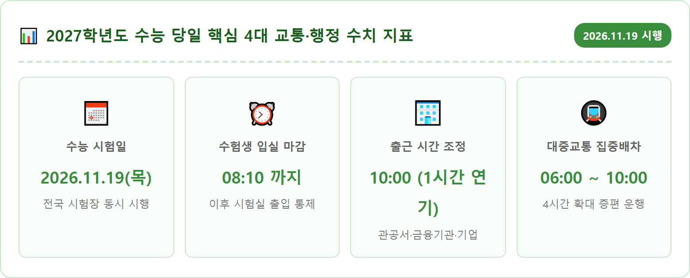
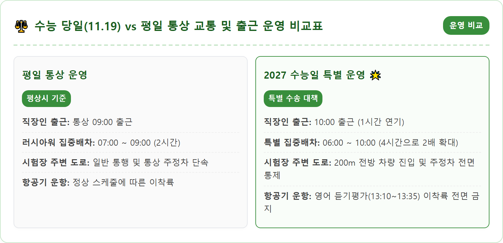
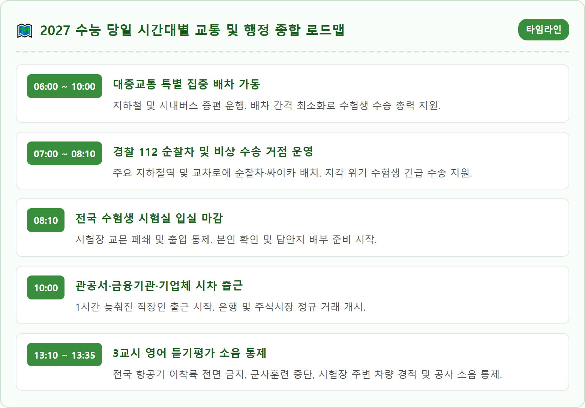
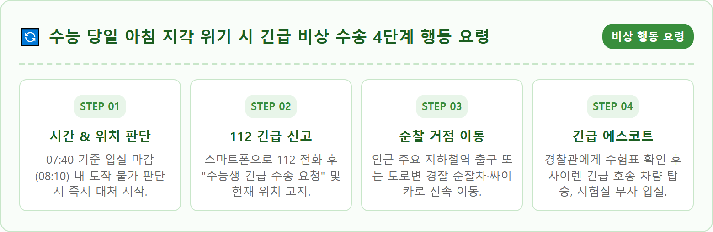
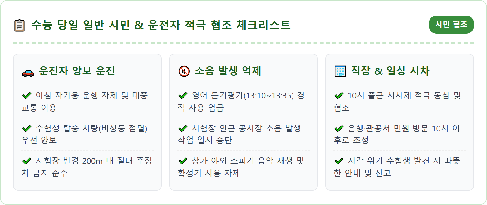
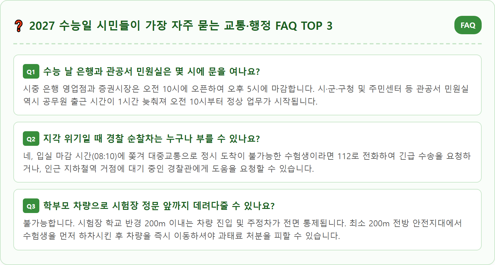

Korean police officers assisting high school students arriving on time for the national college entrance exam CSAT on a crisp autumn morning. Police patrol cars with flashing lights stationed near a subway station entrance in Seoul, assisting students with transparent clipboards and backpacks. Warm autumn morning sunlight, modern city street background with city buses and autumn trees, inspiring and supportive atmosphere. Ultra realistic photography, 8k resolution, authentic Korean context.

2026년 11월 19일 목요일, 전국 80여 개 시험지구 1,300여 개 시험장에서 2027학년도 대학수학능력시험(수능)이 일제히 치러집니다. 교육부와 국토교통부, 경찰청 및 전국 지방자치단체는 수능 당일 수험생들이 안전하고 원활하게 시험장에 도착할 수 있도록 범정부 차원의 '수능 당일 교통 및 소음 통제 종합 대책'을 가동합니다. 인생의 중요한 관문을 통과하는 수험생들이 도로 위의 정체나 대중교통 지연으로 인해 시험을 망치는 일이 없도록 국가의 모든 수송 역량이 총동원됩니다.
가장 눈에 띄는 변화는 아침 출근 시간대 대중교통의 전면적인 확대 편성입니다. 평소 오전 7시부터 9시까지 2시간 동안 운영되던 출근 혼잡 시간대(러시아워) 집중 배차 시간이 수능 당일에는 **오전 6시부터 오전 10시까지 총 4시간으로 2배 확대**됩니다. 지하철 운행 횟수가 대폭 늘어나고, 시내버스와 마을버스는 배차 간격을 최소화하여 수험생들의 이동 편의를 최우선으로 지원합니다.
동시에 수험생 등교 시간대 도로 정체를 원천 차단하기 위해 전국 시·군·구 관공서와 공공기관, 은행 및 금융기관, 주요 대기업의 **출근 시간이 기존 9시에서 오전 10시로 1시간 늦춰집니다.** 일반 시민들과 직장인 여러분께서도 수능 당일 아침에는 자가용 운행을 최대한 자제하고 지하철 등 대중교통을 이용해 수험생들의 수송로를 열어주는 따뜻한 배려가 절실히 요구됩니다.
수능 당일 수험생이 반드시 숙지해야 할 가장 엄격한 규칙은 입실 완료 시각입니다. 모든 수험생은 **시험 당일 오전 8시 10분까지 지정된 시험실에 반드시 착석**을 완료해야 합니다. 8시 10분 이후에는 교문 및 건물 출입문이 닫히며, 8시 40분 1교시 국어영역 시작 전 본인 확인 및 시험 유의사항 안내가 엄격히 진행되므로 지각 시 원칙적으로 시험 응시가 불가능해질 수 있습니다.
시험장 입실은 오전 6시 30분부터 가능하므로, 낯선 환경에 적응하고 마음의 안정을 찾기 위해서는 가급적 오전 7시 30분에서 7시 40분 사이에 여유 있게 고사장에 도착하는 것이 좋습니다. 시험장 입실 전날인 11월 18일(수)에는 예비소집이 실시되므로, 반드시 본인의 수험표를 수령하고 시험장 위치와 대중교통 이동 동선을 사전에 직접 확인해 두어야 당일 당황하는 사고를 방지할 수 있습니다. 당일 입실 시간 임박 시 심리적 불안감이 극대화될 수 있습니다.
시험 시간표는 1교시 국어(08:40~10:00), 2교시 수학(10:30~12:10), 점심시간(12:10~13:00), 3교시 영어(13:10~14:20), 4교시 한국사 및 탐구(14:50~16:37), 5교시 제2외국어/한문(17:05~17:45) 순으로 진행됩니다. 수험생들은 신분증과 수험표를 전날 밤 미리 투명 파일에 챙겨두고, 아날로그 시계와 보온 도시락을 철저히 점검해야 합니다. 전자담배나 스마트워치는 부정행위 물품이므로 절대 소지해서는 안 됩니다.

수능 아침 교통 대란을 방지하기 위한 핵심 행정 조치는 전국적인 출근 시간 시차제 운영입니다. 정부는 중앙행정기관, 지방자치단체, 공기업 등 전 공공기관의 출근 시각을 **기존 오전 9시에서 오전 10시로 1시간 늦추도록 공식 지정**하였습니다. 이를 통해 아침 7시에서 8시 사이 도로로 쏟아져 나오는 통근 차량을 분산시켜 수험생들의 이동로를 확보합니다. 공무원과 공공기관 직원들은 10시 출근에 맞춰 시차 출퇴근제를 적용받습니다.
공공기관뿐만 아니라 민간 부문에서도 적극적인 동참이 이루어집니다. 전국은행연합회의 결정에 따라 시중 은행, 저축은행, 농·축협 등 금융기관의 영업점 오픈 시간이 오전 9시에서 오전 10시로 일제히 변경되며, 마감 시간 역시 오후 4시에서 오후 5시로 1시간 순연됩니다. 한국거래소(KRX)의 유가증권시장(코스피), 코스닥시장, 코넥스 시장의 정규 주식 매매 거래 개시 시간 역시 오전 10시로 1시간 늦춰집니다.
일반 사기업 및 대기업 역시 정부의 협조 요청에 따라 부서별 유연근무제나 오전 10시 출근을 적극 권장하고 있습니다. 수험생을 자녀로 둔 직장인들은 물론, 일반 직장인 여러분도 당일 은행 업무나 관공서 민원 방문 일정이 있다면 10시 이후로 스케줄을 조정하셔야 헛걸음하는 불편을 겪지 않습니다. 주식 거래자들 또한 장 개장 시각이 10시로 늦춰진다는 점을 염두에 두어야 합니다.
수도권 교통의 대동맥인 서울 지하철 1~9호선 및 신분당선, 경의중앙선 등 광역철도는 수능 당일 수험생 등교 시간대에 맞춰 총력 수송 태세에 돌입합니다. 통상 아침 7시부터 9시까지 운영되던 출근 집중 배차 시간을 **오전 6시부터 오전 10시까지 4시간으로 대폭 연장**합니다. 이 조치는 수험생뿐만 아니라 10시로 출근 시간이 미뤄진 일반 직장인들의 수송까지 완벽히 감당하기 위함입니다.
이 시간대 동안 지하철 운행 횟수는 총 30~40회 이상 추가 증편되며, 열차 간 배차 간격이 2~3분대로 촘촘하게 좁혀집니다. 만일의 열차 고장이나 신호 장애 등 돌발 사태에 대비해 주요 환승 거점역(신도림, 사당, 왕십리, 종로3가 등)에는 비상 대기 예비 열차가 항시 대기하여 비상 상황 발생 시 즉각 투입됩니다. 열차 지연으로 인한 수험생 피해를 원천 차단하는 이중 안전망입니다.
또한 서울교통공사와 코레일은 역무원 및 지원 인력을 개찰구와 승강장에 집중 배치하여 수험생 시험장 방향 출구 안내를 돕고, 역사 내 엘리베이터와 에스컬레이터의 안전 점검을 완료하여 병목 현상을 방지합니다. 수험생들은 지하철 지연이나 돌발 정체를 피하기 위해 환승 구간이 적은 최단 경로를 미리 파악해 두는 것이 유리하며, 티머니 카드 잔액을 미리 충전해 두어야 개찰구 지체를 막을 수 있습니다.

지하철역에서 다소 떨어진 주택가나 외곽 시험장에 배정된 수험생들을 위해 시내버스와 마을버스 역시 총력 수송 체계를 갖춥니다. 각 지자체는 시험장을 경유하는 버스 노선의 배차 간격을 평소 출근 시간대보다 20~30% 이상 단축하여 촘촘하게 운행하도록 버스운송사업조합과 협의를 마쳤습니다. 버스 정류장에서 기다리는 대기 시간을 최소화하기 위한 특단의 조치입니다.
특히 시험장을 경유하는 시내버스와 마을버스의 전면 유리창에는 **'수능 시험장 경유 노선'** 안내 표지판이 부착되며, 시험장 인근 정류소에 도착할 때마다 "이번 정류소는 ○○고등학교 수능 시험장입니다. 수험생 여러분 힘내십시오"라는 격려 및 하차 안내 방송이 송출됩니다. 수험생들이 실수로 정류장을 지나치지 않도록 세심하게 배려한 조치입니다.
또한 아침 6시 30분부터 8시 10분 사이에는 지자체 관용 차량과 모범운전자회, 녹색어머니회의 자원봉사 차량 수백 대가 주요 버스 정류장과 지하철역 인근에 비상 대기합니다. 대중교통이 지연되거나 환승에 차질이 빚어진 수험생을 발견하는 즉시 시험장까지 무료로 신속하게 태워주는 '빈차 태워주기' 운동이 대대적으로 전개됩니다. 도움이 필요한 수험생은 주저 없이 손을 들어 차량 지원을 요청할 수 있습니다.
수능 날 아침이면 차량 고장, 버스 오탑승, 교통 체증 등 예기치 못한 돌발 상황으로 인해 입실 마감 시간(오전 8시 10분)에 쫓기는 수험생들이 매년 발생합니다. 경찰청은 이러한 지각 위기 수험생들을 위해 전국 주요 지하철역과 교차로 등 교통 요충지 수백 곳에 **'수험생 비상 수송 거점'**을 설치하고 112 순찰차와 경찰 오토바이(싸이카)를 전진 배치합니다.
만약 아침 7시 30분이 넘은 시각에 도로가 꽉 막혀 제시간에 도착하기 어렵다고 판단된다면, 주저하지 말고 **112에 전화를 걸어 "수험생 긴급 수송 요청"을 접수**해야 합니다. 경찰 112 종합상황실에서는 위치 정보를 기반으로 가장 가까운 순찰차나 싸이카를 현장으로 즉시 출동시켜 사이렌을 울리며 안전하고 빠르게 시험장 정문까지 에스코트합니다. 신호등 통제 지원을 받아 촌각을 다투는 수험생을 살려냅니다.
지하철역 출구에 나와 있는 모범운전자회 자원봉사자나 경찰관에게 수험표를 보여주며 도움을 요청해도 즉시 비상 수송 차량에 탑승할 수 있습니다. 다만, 순찰차 긴급 수송은 긴급한 상황에 처한 수험생을 위한 공공 서비스이므로, 사소한 지각 우려로 남용하기보다는 30분 이상 일찍 집을 나서는 철저한 시간 관리가 기본이 되어야 합니다.

수능 시험 당일 가장 정적이고 삼엄한 긴장감이 흐르는 시간은 바로 3교시 영어영역 듣기평가가 진행되는 **오후 1시 10분부터 1시 35분까지 총 25분간**입니다. 이 시간대에는 수험생들이 오직 스피커에서 흘러나오는 영어 발음에 집중할 수 있도록 국가적인 차원의 강력한 소음 통제 조치가 시행됩니다. 단 한 번의 외부 소음으로도 수험생의 1년 노력이 물거품이 될 수 있기 때문입니다.
국토교통부 항공 통제에 따라 이 25분 동안에는 비상착륙 등 불가피한 상황을 제외하고 **전국 모든 공항에서 항공기 이륙과 착륙이 전면 금지**됩니다. 비행 중인 항공기는 상공 3km 이상 안전 고도에서 선회하며 대기해야 합니다. 또한 국방부와 주한미군은 시험장 주변 군부대의 사격 훈련, 포사격, 야외 기동 훈련 및 군용 헬기 운항을 전면 중지합니다. 국제선과 국내선을 막론하고 모든 하늘길이 잠시 숨을 죽입니다.
지상에서도 철저한 통제가 이루어집니다. 시험장 주변 도로를 통과하는 기차와 지하철은 서행 운행하며 기적(경적)을 울리지 못하도록 조치됩니다. 시험장 인근 건설 공사장에서는 소음 발생 공사가 전면 중단되며, 운전자들 역시 시험장 주변 1km 이내에서는 절대 경적을 울리지 말고 서행 운전해야 합니다. 온 국민이 한마음으로 수험생들의 1분을 지켜주는 시간입니다.
수능 당일 자가용을 운전하는 일반 시민과 학부모 운전자들이 반드시 지켜야 할 도로교통법상 주의사항이 있습니다. 모든 수험장 학교 교문 앞과 **반경 200m 이내 도로변은 주정차가 전면 금지**되는 절대 주정차 금지 구역으로 설정됩니다. 자녀를 시험장에 바래다주는 학부모 차량도 학교 정문 바로 앞까지 진입할 수 없습니다. 교문 앞 혼잡은 후속 수험생들의 진입을 가로막는 치명적인 원인이 됩니다.
학부모 차량은 시험장 200m 전방 안전지대에서 수험생을 신속히 하차시킨 후 곧바로 차량을 이동해야 하며, 교문 앞 도로에 비상등을 켠 채 대기하거나 정차하는 행위는 극심한 병목 현상을 유발하므로 경찰과 불법 주정차 단속 요원에 의해 즉시 견인 조치 및 과태료가 부과됩니다. 수험생을 배웅할 때에는 미리 포옹과 격려를 나누고 안전한 곳에서 내려주는 것이 성숙한 부모의 배려입니다.
또한 시험장 주변 교차로에서는 신호 위반, 끼어들기, 꼬리물기 행위에 대한 경찰의 집중 단속이 실시됩니다. 수험생을 태운 차량이 신속히 지나갈 수 있도록 양보 운전을 실천해 주시고, 수험생 입실 완료 시각인 오전 8시 10분까지는 가급적 시험장 주변 도로로의 진입을 우회하여 주시기 바랍니다. 성숙한 시민 의식이 수험생들의 발걸음을 가볍게 만듭니다.

수능 당일 아침 수험생들이 가장 흔히 겪는 패닉 상황 중 하나가 바로 '수험표 분실'입니다. 만약 집이나 이동 중에 수험표를 분실했거나 집에 두고 왔다는 사실을 뒤늦게 깨달았더라도 절대 당황하거나 집으로 되돌아갈 필요가 없습니다. 현장에서 즉시 재발급받을 수 있는 비상 구제 절차가 마련되어 있습니다. 시간을 허비하며 되돌아가다 입실 마감 시간을 넘기는 것이 가장 위험합니다.
수험표를 분실했을 때는 신분증(주민등록증, 운전면허증, 여권, 청소년증 등)과 여권용 규격 사진 1매를 지참하고, **시험 당일 아침 7시 30분까지 시험장 본부(시험관리본부)**로 찾아가면 즉시 '임시 수험표'를 발급받아 정상적으로 시험에 응시할 수 있습니다. 만약 사진이 없더라도 시험장 관리본부에서 본인 확인 서약서 작성 및 임시 확인 조치를 거쳐 응시가 가능하도록 배려하므로 발걸음을 돌리지 말고 시험실로 직행해야 합니다.
각 시·도 교육청과 경찰청은 당일 아침 6시부터 '수능 교통 및 비상 수송 종합상황실'을 가동합니다. 대중교통 관련 문의는 각 지자체 다산콜센터(서울 120 등)를 이용하시고, 이동 중 긴급 구호나 호송이 필요한 경우 국번 없이 112(경찰) 또는 119(소방)로 즉시 연락하시기 바랍니다. 오랜 시간 땀 흘려 준비해 온 모든 수험생 여러분의 빛나는 노력이 온전히 결실을 맺기를 진심으로 응원합니다.
